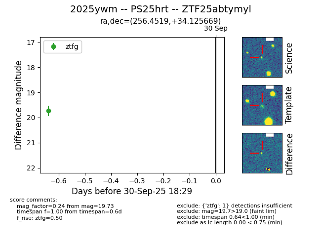

FINK: ZTF25abtymyl
Lasair: ZTF25abtymyl
ALeRCE: ZTF25abtymyl
TNS: 2025ywm
YSE: 2025ywm
ZTF25abtymyl (ztf,fink)
2025ywm (tns,yse)
PS25hrt (panstarrs)
equatorial (ra, dec) = (256.4519,+34.12567)
galactic (l, b) = (57.0161,+35.69567)

last ztfg=19.73
1 ztfg detections